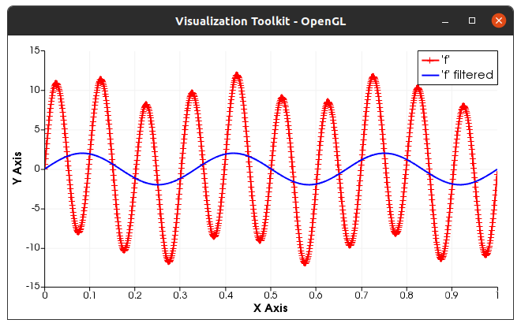
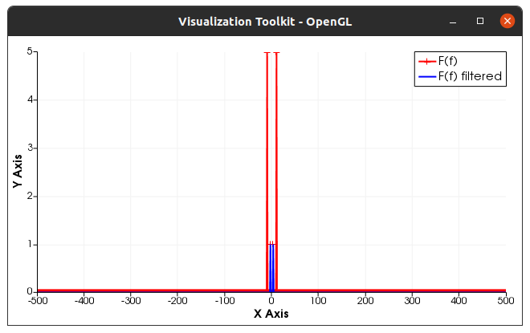

How-to¶
The Castor-FFTW wrapper has been divided into three headers. The first one, castor_fftwf.hpp is for the float precision while castor_fftw.hpp is for the double precision. Both should be included if you plan to mix float and double. The third header castor_fftwm.hpp contains some templatized helper-functions (m stands for miscellanous). However, the main interface is made such that the function call remains the same whatever the precision. We describe below a small example extracted from the demo/ folder.
We recall that all functions of the castor project are defined within the namespace castor::. However, the castor project already provides a FFT interface through the KISSFFT library. In order to avoid interferences, the functions of the Castor-FFTW wrapper are defined within the sub-namespace castor::fftw::.
Basics¶
A minimal example¶
The minimal demo_float.cpp file should look like this
#include "castor/matrix.hpp"
#include "castor_fftwf.hpp"
using namespace castor;
int main()
{
// your code here
}
We will compute Fourier transforms of a float matrix, compute the inverse transforms and compare them to the original matrix. Everything can be easily translated to double precision.
First, let us create some data.
std::size_t N = 100;
matrix<float> A1d = rand<float>(N,1); // could have been rand<float>(1,N)
Then, we compute the forward Discrete Fourier Transform and we normalize it.
auto Ahat = fftw::fft(A)/static_cast<float>(N);
Many things happened internally in the line above. First, the matrix A was copied into a matrix<std::complex<float>>. It would not have been the case if A had already been a matrix<std::complex<float>>. It is related to the current internals of the FFTW3 library. Then, the FFT was computed and returned as a matrix<std::complex<float>>. Since the result of castor::fftw::fft() is not normalized, we divide it by the number of elements. Now, we compute the backward transform and compare the result with the original data.
disp(abs(norm(fftw::ifft(Ahat) - A)));
The result should be something like this depending on your computer
5.5672e-07
A value of the order of 1e-06 is totally acceptable.
Remark: It is not possible to write
Ap = fftw::ifft(fftw::fft(A)/static_cast<float>(N)); // not possible
in our context. This is due to the wrapper which requires the use of a pointer to interact with the C functions. The issue will not be discussed further.
Now, let us perform a 1D transform along the dimensions of a matrix. The behavior of fftw::fft is the same as the corresponding Matlab function.
std::size_t M = 50;
A = rand<float>(M,N);
// default is column by column
Ahat = fftw::fft(A)/static_cast<float>(M);
disp(abs(norm(fftw::ifft(Ahat) - A)));
// transform line by line
Ahat = fftw::fft(A,2)/static_cast<float>(N);
disp(abs(norm(fftw::ifft(Ahat,2) - A)));
The result should look like
4.06223e-06
4.24932e-06
Finaly, we compute a 2D transform on a matrix. There are two ways to perform such a transform. By calling fft2(A), A is assumed to be two-dimensional, even if one dimension is equal to 1. By calling fft2(M,N,A), A can have any size as long as M*N == size(A,1)*size(A,2).
Ahat = fftw::fft2(A)/static_cast<float>(M*N);
disp(abs(norm(fftw::ifft2(M,N,Ahat) - A)));
6.5948e-06
Note: In future developments, the support for the three-dimensional FFT will be added through the fftw::fft3(M,N,K,A) interface where (M,N,K) are the dimensions.
Compilation¶
Assuming that the castor project and Castor-FFTW have been installed in a standard location (meaning that the headers can be found automatically by the compiler), assuming that the compiler is g++, the program above can be compiled easily with the following command line (Ubuntu and MacOS)
g++ demo_float.cpp -o test_float -lfftw3f
For the double version,
g++ demo_double.cpp -o test_double -lfftw3
Obviously, if float and double are mixed together, one can combine both
g++ demo_double_float.cpp -o test_double -lfftw3 -lfftw3f
If, for one reason or the other, some headers cannot be found, it is possible to indicate their path to the compiler like
g++ -I/path/to/missing/headers main.cpp -o myExecutable -l...
Warning: All the header files are assumed to be within a castor/ subfolder. Consequently, the command line should be
g++ -I/path/to/castor/folder -I/path/to/other/missing/headers main.cpp -o ...
Practical examples¶
We give now two, somehow, practical examples in order to demonstrate the functionalities of Castor-FFTW. In the first example, we simply compute and plot the amplitude spectrum of a sum of sine functions. In the second example, we compute the transform of a rectangular function which we smooth using a gaussian filter.
In both examples, the plots will be made using the graphical functionalities of the castor project. We refer to the corresponding documentation.
Using the helpers¶
The header castor_fftwm.hpp features three useful functions
fftfreq( ... )returns the frequencies corresponding to the result of the forward Fourier transform.
fftshift( ... )swaps the input so that the result of the forward transform is sorted in the order of the ascending frequencies. Indeed, when performing a forward discrete Fourier transform, the result is an array where the “first half” corresponds to the positive frequencies and the second half to the negative frequencies.
ifftshift( ... )is the reciprocal transformation offftshift( ... )such thatifftshift(fftshift(x)) == x.
WARNING: Regarding (i)fftshift, the function supports with the same interface the 1-dimensional case, the 1d case along a row/column of a matrix, and the 2d case. The 3d case will be implemented in the future.
We give an example below. From the empty minimum .cpp file given at the top, we first create a frequency vector by assuming a sampling over the interval [0,1] at 10 Hz.
#include "castor/matrix.hpp"
#include "castor/castor_fftw.hpp"
#include "castor/castor_fftwm.hpp"
using namespace castor;
int main()
{
std::size_t N = 10; // nb. of samples
double dt = 1./N; // sampling time interval
matrix<double> freqs = fftw::fftfreq(N, dt); // compute the frequencies
disp(freqs,2,std::cout,N,N);
freqs = fftw::fftshift(freqs);
disp(freqs,2,std::cout,N,N);
freqs = fftw::ifftshift(freqs);
disp(freqs,2,std::cout,N,N);
}
The output should look like
Matrix 1x10 of type 'd' (80 B):
0 1.00000 2.00000 3.00000 4.00000 -5.00000 -4.00000 -3.00000 -2.00000 -1.00000
Matrix 1x10 of type 'd' (80 B):
-5.00000 -4.00000 -3.00000 -2.00000 -1.00000 0 1.00000 2.00000 3.00000 4.00000
Matrix 1x10 of type 'd' (80 B):
0 1.00000 2.00000 3.00000 4.00000 -5.00000 -4.00000 -3.00000 -2.00000 -1.00000
Fourier transform of sine functions¶
In this example, we compute the Fourier transform of a sum of sine functions, we filter the higher frequency and we compute the new signal using the backward transform.
WARNING: This example features plots which are made using the plotting features of castor. We refer to the corresponding documentation.
First, let us create the main file.
#include "castor/matrix.hpp"
#include "castor/graphics.hpp" // for the plots
#include "castor/castor_fftw.hpp"
#include "castor/castor_fftwm.hpp"
using namespace castor;
int main()
{
Now, we set the number of samples, the time span and the time step dt.
//
std::size_t N = 1000;
double tmin = 0.;
double tmax = 1.;
double dt = (tmax-tmin)/N;
We also initialize the plots so that we can add plots at each important step.
// initialize figures
figure fig;
figure fighat;
//
In the next step, we initialize the data in the time domain as the sum of a sine function with frequency f1 = 3 Hz and amplitude A1 = 2, and a second one with frequency f2 = 10 Hz and amplitude A2 = 10. We add the result to the first plot.
matrix<double> t = zeros(1,N);
for(auto i=0; i<N; ++i) t(i) = i*dt;
matrix<double> f = 2.*sin(2*M_PI*3.*t) + 10.*sin(2*M_PI*10.*t);
// add 'f' to plot
plot(fig,t,f,{"r-+"},{"'f'"});
Now, we compute the discrete Fourier transform, sort the output in the frequency ascending order and we plot the amplitude as a function of the frequency.
matrix<std::complex<double>> fhat = fftw::fftshift(fftw::fft(f))/(double)N;
matrix<double> freq = fftw::fftshift(fftw::fftfreq(N,dt));
// add fhat to plot
plot(fighat,freq,abs(fhat),{"r-+"},{"F(f)"});
We filter the signal by removing all frequencies whose absolute value is above 5 Hz, we plot the corresponding spectrum, we compute the backward transform of the signal and we plot the filtered signal
// now we filter the data
auto fhat_filtered = fhat;
for(auto i=0; i<N; ++i)
{
if(std::abs(freq(i)) > 5.) fhat_filtered(i) = 0;
}
plot(fighat,freq,abs(fhat_filtered),{"b-"},{"F(f) filtered"});
// and we compute the backward transform
fhat_filtered = fftw::ifftshift(fhat_filtered);
auto f_filtered = fftw::ifft(fhat_filtered);
// plot filtered signal
plot(fig,t,real(f_filtered),{"b-"},{"'f' filtered"});
// draw all figures
drawnow(fig);
// the end
return EXIT_SUCCESS;
}
The signal in the time domain should look like the figure below.
{kind=link}
The amplitude spectrum should look like
{kind=link}
This example is available within the ./demo/demo_full/ folder. The different steps are recalled below. Starting from the castor-fftw/ directory:
cd ./demo/demo_full/
mkdir build && cd build
cmake ..
make
./demo_cfftw
The ./demo/demo_full/CMakeLists.txt assumes a standard installation of the castor project, VTK 8.2.0 and the FFTW3 on a Ubuntu-like system.